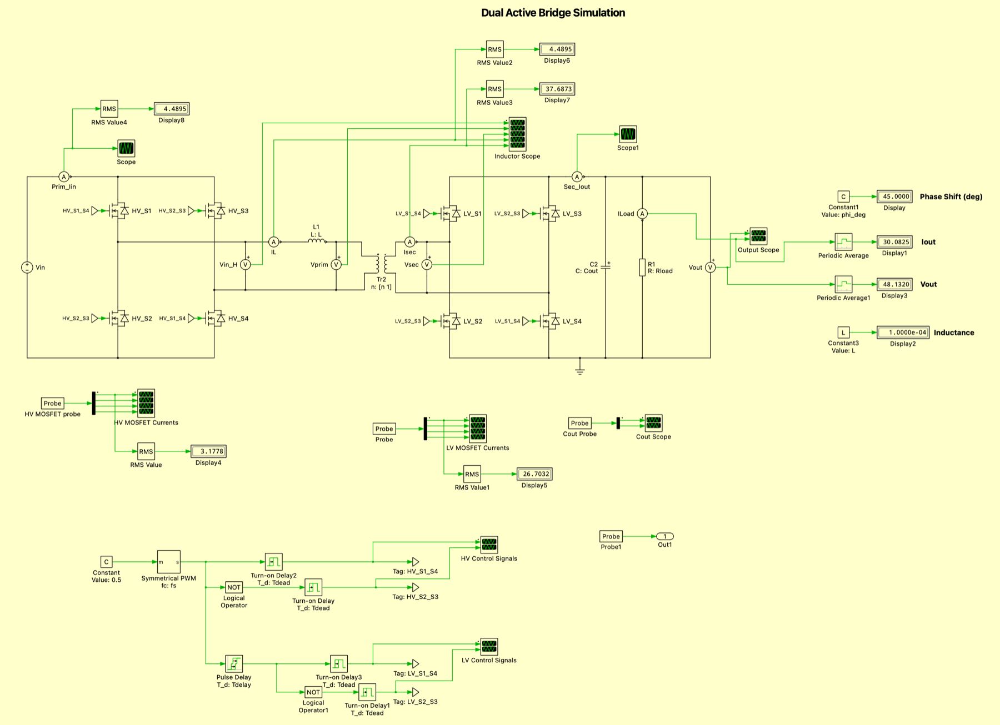
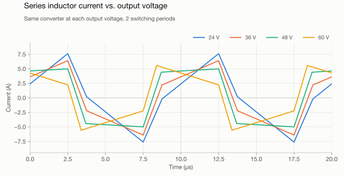
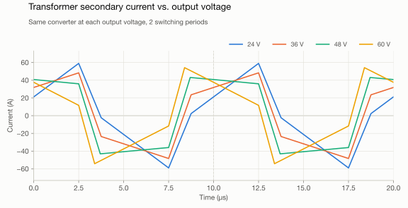
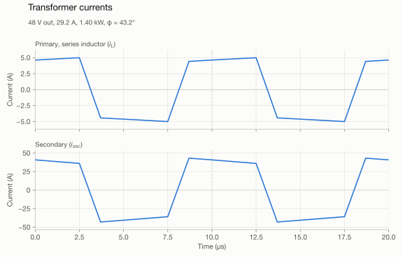

Overview
I wanted to learn more about power electronics, so I decided to design a dual active bridge (DAB). To make sure this is actually useful to me, I designed it to be able to deliver up to 30 A with a voltage that varies from 24 V to 60 V, and I also added a PFC to allow me to use it with mains input.
Requirements
- Input: 120–240 V AC
- Output: 24–60 V, 30 A max, 1.4 kW max
Simulation
I simulated the DAB in PLECS with a power output of about 1.4 kW and a current cap of 30 A. This simulation provided me with the voltages and currents needed to design the converter.



Waveforms at each operating point

DAB MOSFET Design
Simulation results
| Output | Power | HV FET peak | HV FET RMS | LV FET peak | LV FET RMS |
|---|---|---|---|---|---|
| 24 V / 30 A | 720 W | 7.6 A | 3.1 A | 59.0 A | 24.3 A |
| 36 V / 30 A | 1080 W | 6.4 A | 3.0 A | 48.3 A | 24.0 A |
| 48 V / 29.2 A | 1400 W | 5.0 A | 3.1 A | 43.1 A | 25.7 A |
| 60 V / 23.3 A | 1400 W | 5.6 A | 2.7 A | 54.2 A | 24.1 A |
Current through each FET at full power. RMS values are taken over one switching period once the converter has settled.
Primary side FET
For the HV side switches, I will be going with SiC MOSFETs instead of the traditional silicon ones because they typically have a higher voltage rating than silicon FETs. They also switch faster than silicon MOSFETs, so there should be less switching loss (this might not be that significant since the DAB has ZVS). Since I plan on boosting the rectified AC voltage to 400 V, I am choosing a switch that can handle above 600 V to protect it from unexpected overshoots. The MOSFET should be able to handle more than 14 A peaks.
I am going with the IMT65R060M2HXUMA1 because it was the cheapest MOSFET I could find that could handle my requirements.
Secondary side FETs
For the LV side switches, I am going with silicon switches because they have a lower \(R_{DS(on)}\), so there should be lower conduction losses. This is the number one constraint since the max RMS current that flows through them is around 26 A.
For the LV side, I am going with the IPT015N10N5ATMA1. It has a very low \(R_{DS(on)}\), so the conduction losses are very small.
I will simulate the thermal losses of both FETs in PLECS later.
Gate Driver Choice
For the gate driver, there are two main requirements: current and isolation. It should be able to provide enough current to drive the FETs, and it should have a high enough isolation to block up to 400 V. I decided to go with the 1ED3120MC12HXUMA1 for both the SiC FETs and the Si FETs. This gate driver has an output UVLO that turns on at 10 V (max) and off at 8 V (min). Ideally, I am supposed to use gate drivers with different UVLO voltages for the different drive voltages (18 V for SiC FETs and 12 V for Si FETs), but I want to consolidate the BOM so I don’t have to buy so many parts.
Below are the calculations. The drain voltage swings during the Miller plateau, so the gate current needed to switch at the datasheet speed is:
where \(t\) is the datasheet rise time \(t_r\) or fall time \(t_f\), both measured with \(R_{G,ext} = 1.8\,\Omega\).
SiC (IMT65R060M2H): \(Q_{GD} = 3.6\,\mathrm{nC}\), \(t_r = 5.6\,\mathrm{ns}\), \(t_f = 4.8\,\mathrm{ns}\)
Si (IPT015N10N5): \(Q_{GD} = 34\,\mathrm{nC}\), \(t_r = t_f = 30\,\mathrm{ns}\)
| FET | Required IG | Driver minimum | Margin |
|---|---|---|---|
| SiC (IMT65R060M2H) | 0.75 A | 2.0 A | 2.7× |
| Si (IPT015N10N5) | 1.13 A | 2.0 A | 1.8× |
The 1ED3120 is rated for 5.5 A typical and 2.0 A minimum peak output current. Even at its guaranteed minimum, it supplies more gate current than either FET needs to switch at its datasheet speed, so it works for both bridges.
Magnetics
Transformer
Design goals:
- 8:1 turns ratio
- Primary: \(V_p = 400\,\mathrm{V}\), \(I_p = 4.48\,\mathrm{A}\)
- Secondary: \(V_s = 60\,\mathrm{V}\), \(I_s = 37.6\,\mathrm{A}\)
For the core, I chose an ETD59/31/22 in 3C95 ferrite. I am choosing this material because its flux doesn’t change too much at high temperatures. To size the windings, I started from Faraday’s law:
The bridge applies a square wave, so over half a period the flux swings by:
I want \(B_{pk}\) to be around 0.1 T to reduce core losses. With \(A_e = 368\,\mathrm{mm^2}\), \(f = 100\,\mathrm{kHz}\) and \(V = 400\,\mathrm{V}\):
For an 8:1 ratio, \(27/8 = 3.39\), so I went with 24:3. This gives an actual peak flux density of:
The magnetizing inductance, with \(A_L = 8200\,\mathrm{nH/turn^2}\), is \(8.2\,\mu\mathrm{H}\times 24^2 = 4.7\,\mathrm{mH}\).
For the core loss, I scaled the datasheet loss density at 200 mT with the Steinmetz equation:
Series inductor
The series inductor sets how much power the DAB can transfer. From \(v = L\,di/dt\) and \(v = N\,d\Phi/dt\), with \(\Phi = Ni/\mathcal{R}\):
I am using a gapped B65879Q0150K095 core, with \(A_L = 150\,\mathrm{nH/turn^2}\). For \(L = 100\,\mu\mathrm{H}\):
Then the flux density check:
According to my simulations, the worst-case peak current in the inductor is around 7.6 A when the output is 24 V at 30 A. I designed for a peak of around 5.2 A instead because I wanted a smaller core. I will use better modulation techniques to reduce the peak current in the inductor. For the first test, I will just use an output of 48 V at 30 A using phase-shift modulation, so I should be fine.
Capacitor selection
The capacitors need to be able to absorb the current ripple. Below is how I selected the HV and LV side capacitors. The bridge currents on the DC side ripple at \(2f_{sw} = 200\,\mathrm{kHz}\), and the capacitor carries the AC part of the bridge current. The voltage ripple is set by the charge it absorbs in each ripple period:
I aimed for a ripple of 1% of the output voltage and 1% of the 400 V bus. For heating, the bank’s combined ripple-current rating has to be more than the capacitor RMS current. These values come from the simulation:
| Vout | ΔQsec | IC,out,rms | ΔQpri | IC,bus,rms |
|---|---|---|---|---|
| 24 V | 25.1 µC | 16.7 A | 8.01 µC | 3.98 A |
| 36 V | 25.1 µC | 15.8 A | 6.01 µC | 3.21 A |
| 48 V | 39.4 µC | 21.6 A | 4.57 µC | 2.52 A |
| 60 V | 39.7 µC | 24.8 A | 2.28 µC | 1.55 A |
ΔQ is the charge per 5 µs ripple period. The RMS currents are the bridge DC-side currents with their average removed.
Output (LV side)
For the output, I chose the Panasonic 100SXV22M (22 µF, 100 V polymer, 3 Arms at 100 kHz). Polymer capacitors don’t lose capacitance with DC bias.
| Vout | ΔVmax | Cmin = ΔQ/ΔVmax | IC,rms | Parts for RMS |
|---|---|---|---|---|
| 24 V | 0.24 V | 104 µF | 16.7 A | 6 |
| 36 V | 0.36 V | 70 µF | 15.8 A | 6 |
| 48 V | 0.48 V | 82 µF | 21.6 A | 8 |
| 60 V | 0.60 V | 66 µF | 24.8 A | 9 |
The capacitance only needs 5 parts, so the RMS current sets the count. I went with 11 of them (242 µF, 33 Arms, bank ESR \(30/11 = 2.7\,\mathrm{m\Omega}\)):
100 V X7R ceramics at the bridge terminals take most of the fast current edges.
400 V bus (HV side)
The 200 kHz ripple from the DAB goes into film capacitors placed right at the primary bridge. For a 4 V (1%) ripple:
I chose two TDK B32923C3225M000 (2.2 µF polypropylene) for 4.4 µF. That gives a 1.8 V ripple at the worst case (24 V out) and 2.0 Arms per capacitor.
The PFC also puts a 120 Hz ripple on the bus. A PFC with unity power factor draws \(p_{in}(t) = P(1 - \cos 2\omega t)\), and the bulk capacitor absorbs the pulsing part:
A 1% (4 V) ripple would need \(C \approx 2.4\,\mathrm{mF}\). For the HV side, I am using a lower capacitance because the calculated 2.4 mF is too expensive. I am going to let the DAB controller correct for this 120 Hz ripple. I chose two KEMET ALC70A221DE630 (220 µF, 630 V) for 440 µF:
That is 1.3 A per capacitor, against a rating of 2.04 A at 100 Hz.
Voltage & Current Sensors
Voltage sensor
For the output side (LV), I will just use a simple resistor divider to step down the voltage into the ADC on my microcontroller. For the HV side, it must be isolated, so I am using the AMC3311QDWERQ1. I chose it because it has an isolated DC/DC converter to power the high-voltage side. Below are the divider calculations. The STM32’s ADC is 12-bit with a 3.3 V reference, so 1 LSB is 0.806 mV.
LV side. I mapped 70 V to about 3.1 V, which covers 60 V plus margin for an overvoltage trip. With \(R_{top} = 100\,\mathrm{k\Omega}\) and \(R_{bot} = 4.7\,\mathrm{k\Omega}\) (0.1%):
A 10 nF capacitor across \(R_{bot}\) filters the 200 kHz ripple by about 35 dB:
HV side. The AMC3311 takes up to 2 V at its input. I set the full scale to 500 V to leave headroom above 400 V for overvoltage detection, so the divider ratio is \(2/500 = 1/250\). I split the top resistor into four 1 MΩ resistors in series to keep each one within its voltage rating:
The divider burns \(400^2/4.016\,\mathrm{M\Omega} = 39.8\,\mathrm{mW}\) (about 10 mW per resistor), and a 1 nF capacitor across \(R_{bot}\) puts the filter corner at 10 kHz. The AMC3311’s differential output goes through a difference amplifier with a gain of 1.5, so 500 V lands at 2.99 V on the ADC, and each LSB is 0.135 V.
Current sensors
I decided to go with a Hall-effect current sensor over a shunt resistor because I wanted one IC that would both measure the current and amplify it. For the HV side, I went with the TMCS1123B5A. It has a current measurement range of ±10.3 A. For the LV side, I chose the TMCS1123D71. It has a current measurement range of −36.3 A to 44.1 A.
Power
Primary side FET gate drive voltage
To drive the SiC FETs, the datasheet recommends a gate drive voltage of 18 V. We also need to make sure that this 18 V is isolated.
N-channel MOSFETs need \(V_{GS}\) to be higher than the threshold voltage before the MOSFET can turn on. The issue here is that when the high-side FET turns on, its source goes up to the supply voltage, which is higher than the gate drive voltage, and so the MOSFET turns off. To fix this, we use a bootstrap circuit. It makes sure \(V_{GS}\) stays the same regardless of the voltage at the source.
Each leg runs at 50% duty, so the longest on-time is \(t_{on,max} \approx 5\,\mu\mathrm{s}\). The bootstrap capacitor has to supply the gate charge plus the driver’s quiescent current for that long. With \(Q_g = 19\,\mathrm{nC}\) and \(I_Q = 2.5\,\mathrm{mA}\), and allowing 0.5 V of droop:
I chose a 1 µF, 50 V X7R capacitor (0603). After DC-bias derating, it is about 0.3 µF at 17 V, so the droop is about 105 mV. The diode is the PNU65010ERX (650 V, 1 A), which drops about 1 V:
During the dead time, the low-side SiC body diode conducts and pulls the switch node about 4.3 V below ground, which can overcharge the bootstrap capacitor up to \(V_{DD} + V_{SD} - V_F = 21.3\,\mathrm{V}\). The dead time (100 ns) is a lot shorter than \(R_{boot}C_{boot} = (10\,\Omega)(0.3\,\mu\mathrm{F}) = 3\,\mu\mathrm{s}\), so it never gets there. It settles where the charge added in each dead time equals the charge used in each cycle:
Even in the worst case (\(V_{SD} = 5\,\mathrm{V}\), no quiescent current), it settles at about 20.1 V, which is still 3 V below the 23 V gate limit. The 10 Ω bootstrap resistor also limits the startup inrush to \(17/10 = 1.7\,\mathrm{A}\).
I also added capacitors to the low-side gate drivers to provide the high currents needed to drive the gate. Each low-side FET pulls 19 nC per switching event, and I allowed a 0.2 V droop:
I used a 1 µF, 50 V X7R (0805) at each driver. At 18 V it derates to about 0.4 µF, so the droop is \(19\,\mathrm{nC}/0.4\,\mu\mathrm{F} \approx 48\,\mathrm{mV}\).
To provide the 18 V supply, I used the Murata MGJ1D121802VMC-R7. It is only 1 W, so it can only provide about 49 mA of current. I need to make sure that the current draw from the gate drivers is under this limit. The 18 V rail drives five FETs: the four in the primary bridge (the high-side ones through their bootstrap capacitors) and the PFC FET.
That is about 45% of the module’s rating, and it is still above the 10% minimum load the module needs to keep its output from rising.
Secondary side FET gate drive voltage
On this side, I am not going to use any isolation, so I will drive the MOSFETs using the 12 V provided by the AC/DC converter used to power the MCU. The four secondary FETs have a lot more gate charge (about 238 nC each at 11.3 V), so together they draw about 96 mA, or 1.2 W, from the 12 V rail.
Aux power
For powering the MCUs and the gate drivers, I am using an IRM-15-12 AC/DC power supply. It provides a 15 W, 12 V output that is used to generate the voltage rails for the MCU and gate drivers.
PFC Design
I chose a boost PFC for this converter because it only requires one switch signal. The MCU has only two timers with complementary channels. Since I am using these two timers for the DAB H-bridges, I have none left for a totem-pole PFC. I am fine with the slightly lower efficiency of the boost PFC.
I designed the inductor at the worst case: low line and full power.
| Parameter | Value |
|---|---|
| DAB maximum output power, \(P_o\) | 1400 W |
| Assumed DAB efficiency, \(\eta_{DAB}\) | 96% |
| Assumed PFC efficiency, \(\eta_{PFC}\) | 97% |
| Minimum line voltage (120 V − 10%), \(V_{rms,min}\) | 108 V |
| Bus voltage, \(V_o\) | 400 V |
| Switching frequency, \(f_s\) | 100 kHz |
| Ripple target (fraction of line peak current), \(r\) | 30% |
| Overcurrent trip level, \(I_{trip}\) | 26 A |
Input power and line current
Working backwards from the load through both stages:
With a power factor close to 1, the PFC looks like a resistor to the line, so:
Inductance
The rectified input is \(|v_{in}(\theta)| = V_{pk}\sin\theta\). In continuous conduction, the boost duty cycle is \(d = 1 - |v_{in}|/V_o\), so the peak-to-peak ripple in each switching period is:
This is largest where \(|v_{in}| = V_o/2 = 200\,\mathrm{V}\). At low line, the peak is only \(V_{pk} = \sqrt{2}\times108 \approx 152.7\,\mathrm{V}\), which never reaches 200 V, so the worst-case ripple happens at the line peak. The ripple target is \(\Delta I_L = 0.3 \times 19.7 \approx 5.9\,\mathrm{A}\), and solving at the line peak gives:
Inductor currents
The inductor carries the rectified line current plus the switching ripple:
The ripple at each angle is a triangle with an RMS value of \(\Delta i_L(\theta)/\sqrt{12}\). With \(k = V_{pk}/V_o = 0.382\), averaging over the half cycle gives:
At a fixed input power, the relative ripple grows at high line because the line current falls while the ripple stays close to its maximum of \(V_o/(4Lf_s) \approx 6.25\,\mathrm{A}\):
| Vrms | Ipk | ΔIL | ΔIL/Ipk | IL,pk | Irms |
|---|---|---|---|---|---|
| 108 V | 19.7 A | 5.9 A | 30% | 22.6 A | 13.9 A |
| 120 V | 17.7 A | 6.1 A | 34% | 20.8 A | 12.5 A |
| 216 V | 9.8 A | 6.3 A | 64% | 13.0 A | 7.0 A |
| 240 V | 8.9 A | 6.3 A | 71% | 12.0 A | 6.3 A |
| 264 V | 8.1 A | 6.3 A | 78% | 11.2 A | 5.7 A |
At 216 V and above, ΔIL is the maximum ripple over the line cycle, so IL,pk is an upper bound.
The converter only stays in continuous conduction over the whole line cycle while the average current is more than half the ripple. That is hardest near the zero crossings, which gives:
So full CCM needs about 365 W at 108 V, 450 W at 120 V and 2.2 kW at 264 V. Below these levels, the converter goes into DCM near the zero crossings, which the controller’s duty feedforward has to handle.
Core
Choosing a peak flux density of \(B_{max} = 0.28\,\mathrm{T}\) at the trip current, a current density of \(J = 5\,\mathrm{A/mm^2}\) and a window fill factor of \(K_u = 0.4\):
I went with the same core as the transformer, an ETD59/31/22 in 3C95, which has an area product of about 13.5 cm⁴. The minimum saturation flux density of 3C95 is 330 mT at 100 °C, so designing for 0.28 T at the trip current keeps about 15% margin. The number of turns is:
Neglecting fringing, the total air gap is:
The gap is made with spacers between the core halves. A spacer gaps both the centre leg and the outer legs, so each spacer is about half the total gap, 2.3 mm. At a gap this large, fringing makes the effective area bigger, so the real spacer ends up thicker (about 3.7 mm with fringing). In practice, I will start with about 3 mm spacers and adjust until an LCR meter reads 160 µH.
For the core loss, the biggest flux swing is at the line peak at low line:
The core loss is tiny, so the inductor will be limited by copper loss. I’m still finalizing the winding.